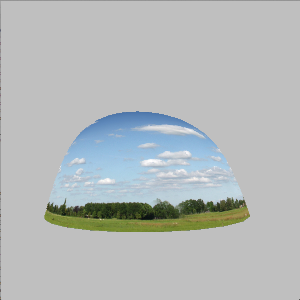

CS307 Final Project
by Sojung Lee
Description:
I used material and lighting, texture mapping, and transparency to create this scene.
The interaction capabilities look like this:
The tennis ball uses the GlobeTextured python file we saw in class. It is texture
mapped using a file found from the internet - seamless.
Scorecards are made using twCylinders for the stand, and four torus objects for
the rings. Since it is metal it should have a higher specularity and shininess
ratio. Quads are texture mapped with custom textures showing set and game cards.
The following is the tennis racquet object from the creative scene assignment. It
uses quad strips in order to connect the frame together.
In order to create a sky effect, Yang's skyDome from contributions was edited for
the size of the tennis court. It was also texture mapped with a different sky
texture. The edges of the half-dome leaves space in between the court, so the
ground was colored with similar color to the grass in the texture.

The court itself was built using GL_QUADS, two blue ones layered on top of each
other for the inner and outer court areas. Depth had to be adjusted sligthly in
order to properly display two overlapped quads. Lines were made using GL_LINES.
The net and the fence both have transparent alpha channels in the png files, using
Hye Soo's teapot as an example.